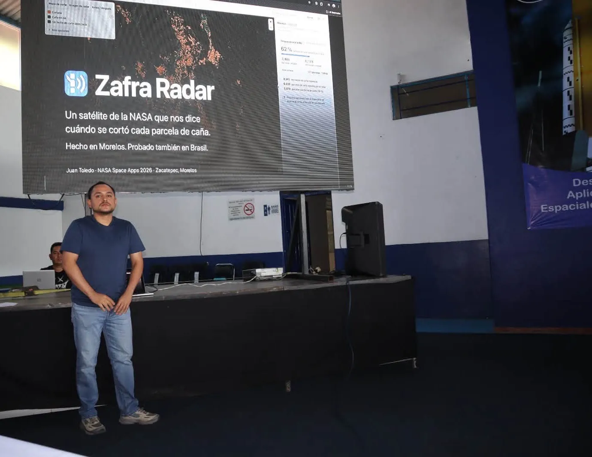
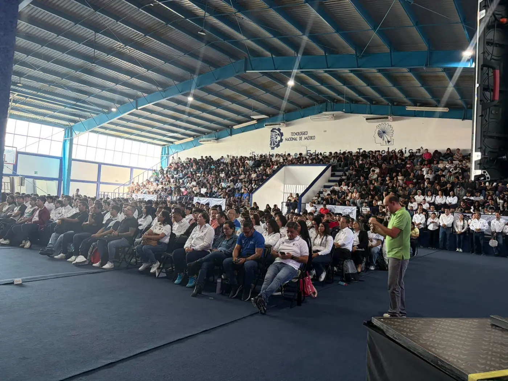

A NASA satellite tells us the day each sugarcane field was harvested.
Built in Morelos, Mexico. Also tested in Brazil.
Open the mapHow the harvest moved
How it works
-
Radar sees through clouds and smoke.
The NISAR satellite, from NASA and India's space agency, passes over the cane fields every 12 days. It works day and night, even under cloudy skies.
-
When cane is cut, the signal changes.
A field with tall cane returns a different signal than a freshly cut one. The system detects that change.
-
The map marks the date for each field.
Every field shows the approximate day it was harvested, and you can watch the season move week by week.
Watch it in 30 seconds
Results
- 6,014
- sugarcane fields found
- 9,943
- hectares mapped, nearly the same area the mill reports
- 3.5
- days of typical error in the harvest date
2025-26 season, Emiliano Zapata mill area, Morelos.
days of typical error in Brazil, with the same code.
Who is it for?
Sugar mills
See how the harvest advances, week by week.
Growers and municipalities
Check on a public map which day each field was harvested.
And it is low-cost: it uses free NASA imagery.
Who's behind it
I'm Juan Toledo, a software developer with more than 9 years of experience, from Morelos, Mexico, and a graduate of Instituto Tecnológico de Zacatepec.
I built Zafra Radar on my own, end to end: the satellite data analysis, the web app and its deployment. I built the web app in one weekend, working with AI coding agents while setting the direction and reviewing every step, during the NASA Space Apps Challenge 2026 at my old school, where 877 people took part in 170 teams.
That is what I do: take an idea or a problem and turn it into a product that works. If you have a project in mind, let's talk.
- From idea to working product
- Data and maps
- Full web applications


Liked it? Help me share it
Want to bring Zafra Radar to your region, or have another tech project in mind? Let's talk.
Message me on WhatsApp